Visuelles.
Momente aus der analogen und digitalen Welt.
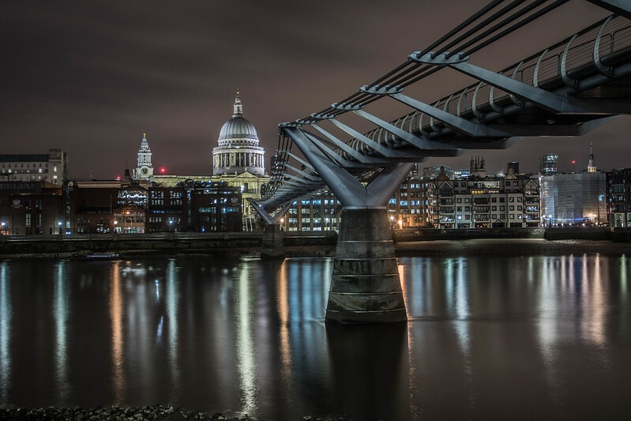
01 — Urban
Millennium Bridge, London

02 — Architektur
Kirche Seliger Pater Rupert Mayer, Poing
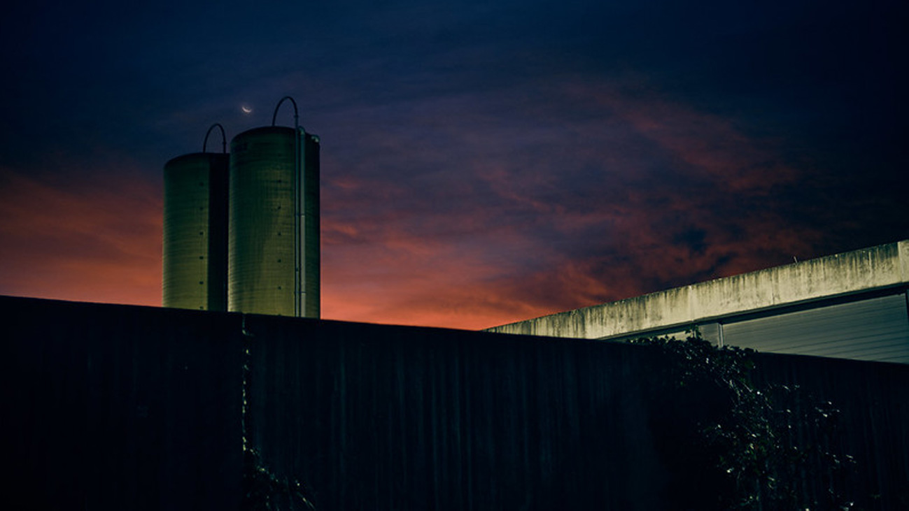
03 — Vibe
Dämmerung
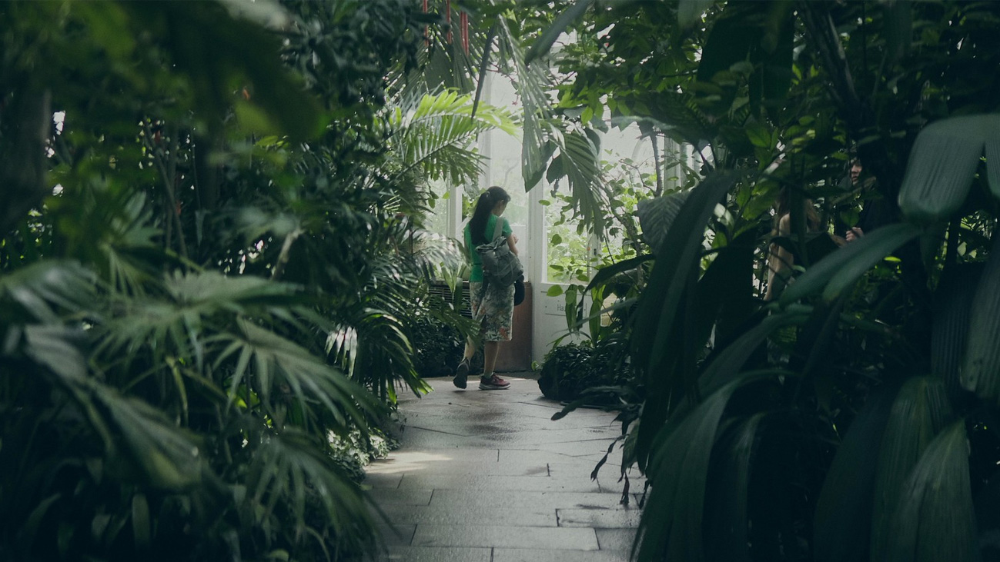
04 — Szene
Botanischer Garten, München
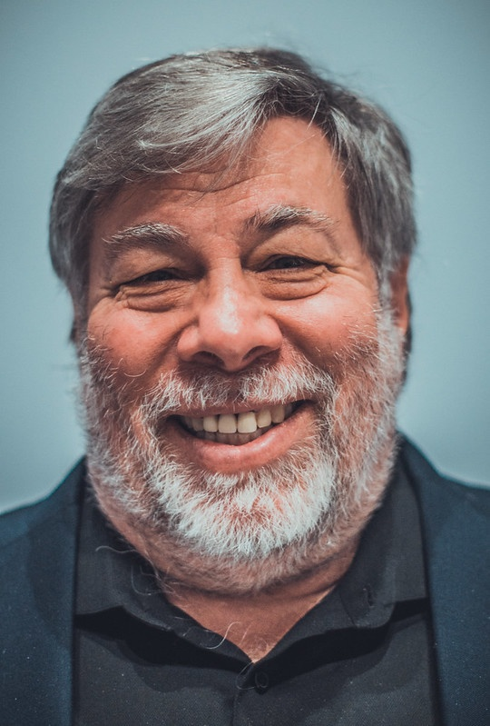
05 — Portrait
Steve Wozniak
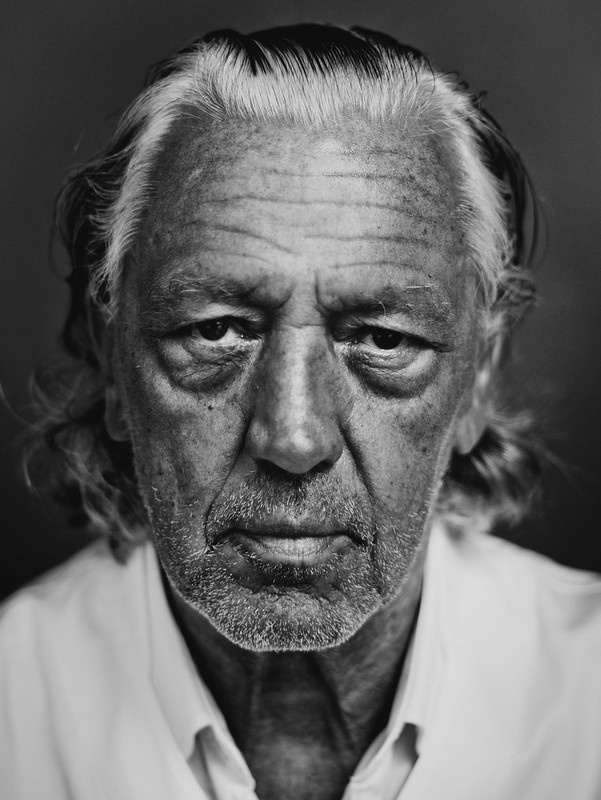
06 — Portrait
Charles Schumann
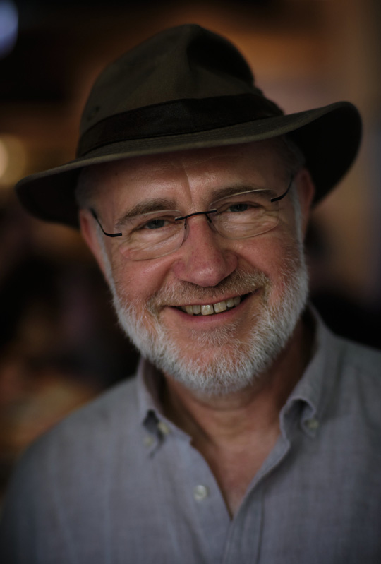
07 — Portrait
Harald Lesch
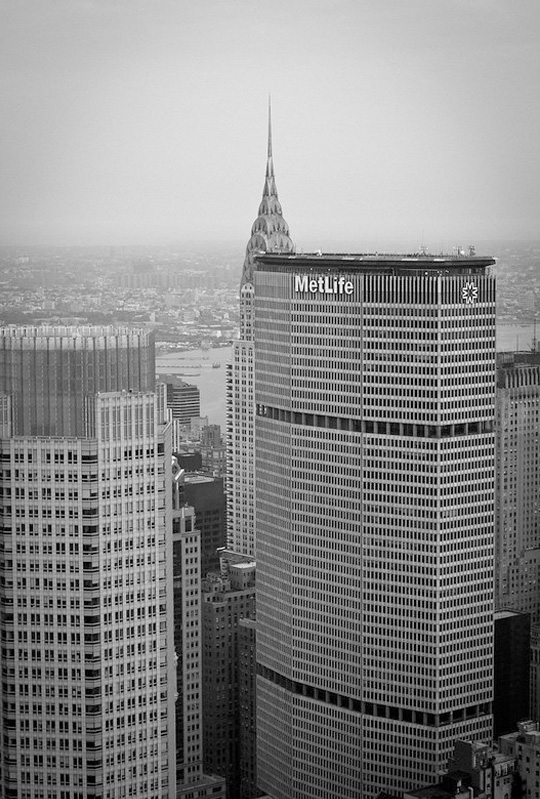
08 — Urban
New York
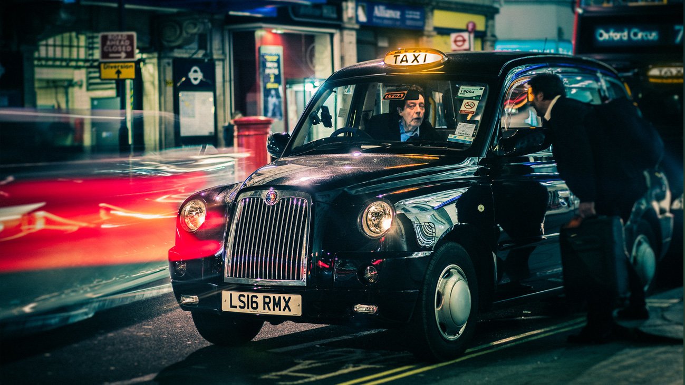
09 — Urban
London
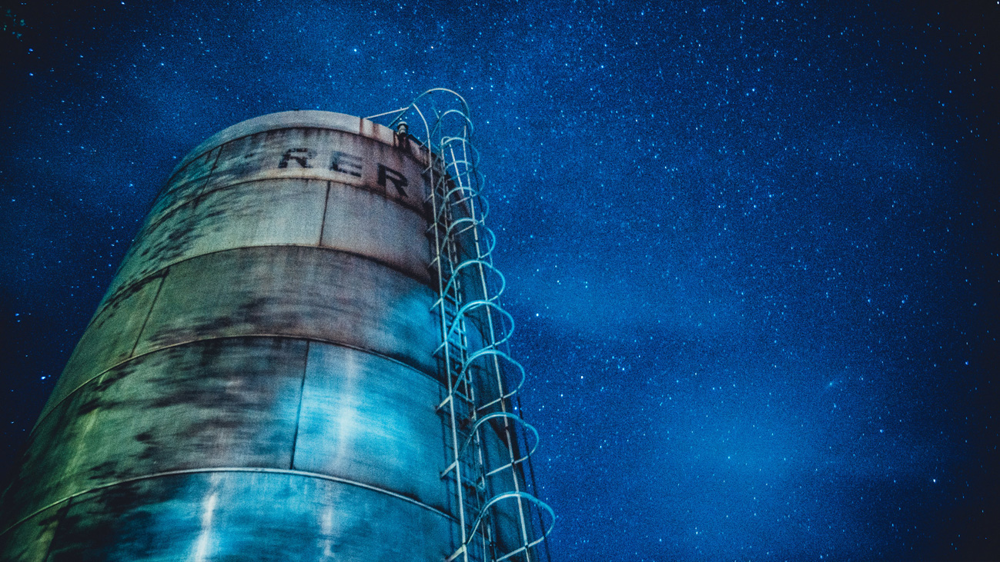
10 — Struktur
Silo, Grub
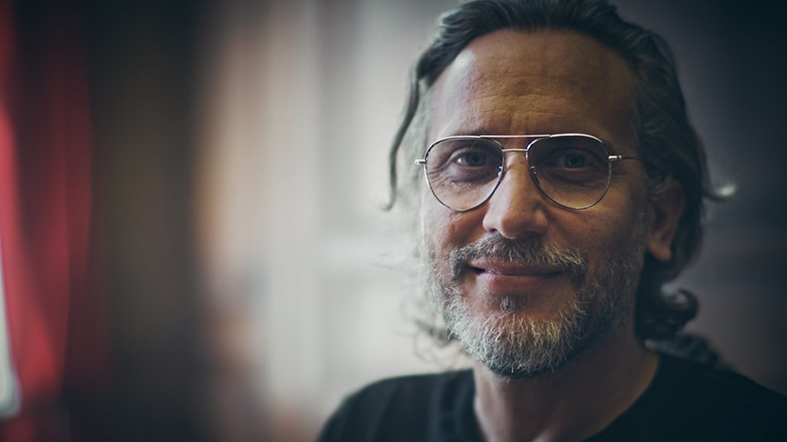
11 — Portrait
Fede Alvarez
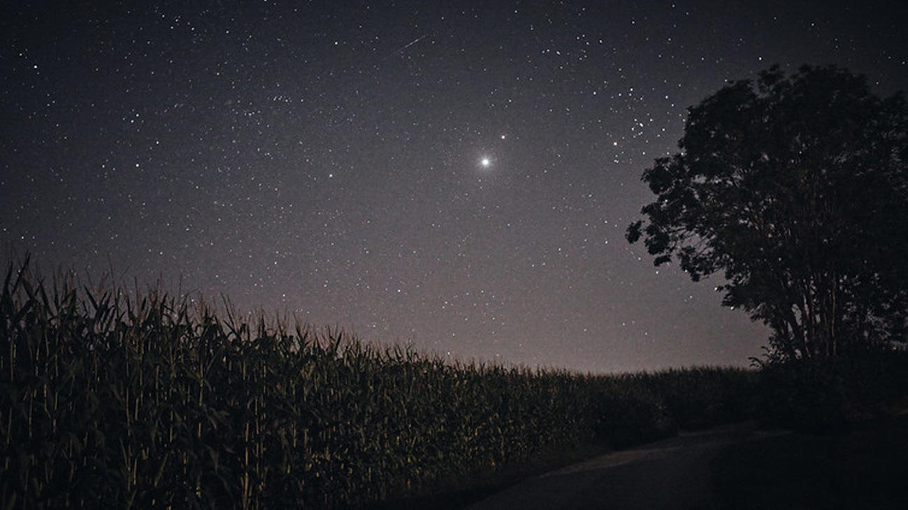
12 — Natur
Feld bei Nacht
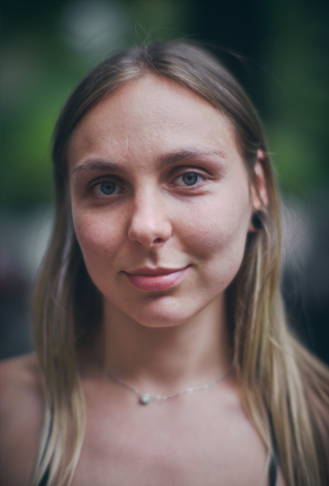
13 — Portrait
"Slaviana"

14 — Portrait
Felix Cremerius
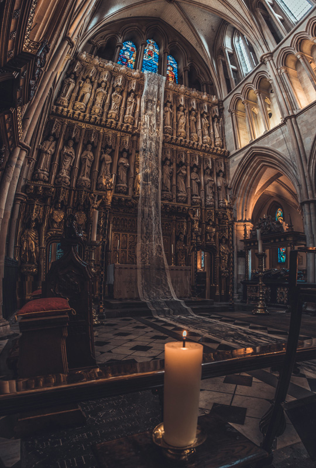
15 — Architektur
Southwark Cathedral, London
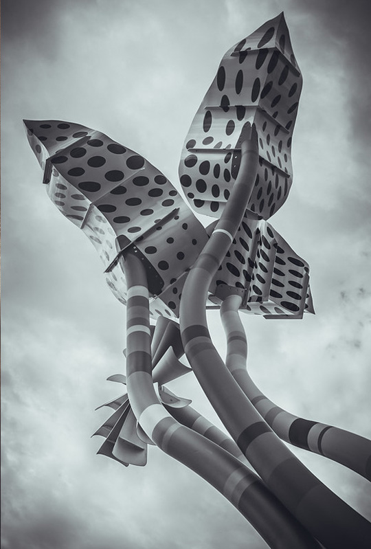
16 — Struktur
Installation
Mehr sehen
Mehr Fotos gibt's auf Michaels dedizierter Fotografieseite, auf Flickr und Unsplash.